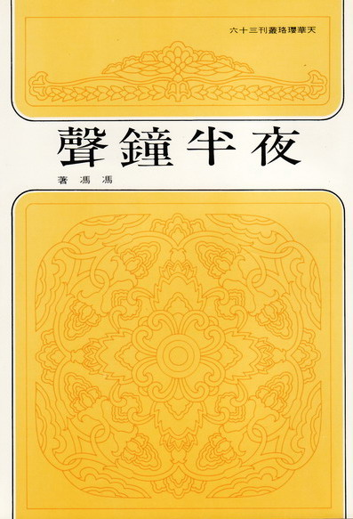
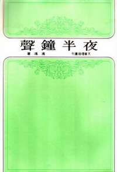

《夜半钟声》新版自序
冯冯
Ying Hua / 誊录
佛法的基本精神是大慈大悲，平等普度众生出苦脱厄，佛法的目标是人人成佛，方法是由戒入定，从定生慧，观照内明，见性成佛。经云一阐提人亦可成佛，又云众生皆有佛性，又说放下屠刀立地成佛，又云顿悟成佛……凡此佛语，都是说人人都本来就有佛性种子，不幸被世俗名利欲念，贪瞋痴等五毒与无明蒙蔽了本性，以致在生死轮回六道流转，永受痛苦烦恼，恶因恶业，因果循环，永无得脱之时。
所以若要跳出生死轮回之苦，若要解脱痛苦烦恼，就必须学佛法！世闻万法，无如佛法之微妙不可思议！有福与有慧者与肯接受佛法者，无不得度，见性成佛，而永脱痛苦及生死轮回之流转。
当今佛学已成为世界高级智识份子与高级学府哲学研究之学问，佛学的哲理，经世界各国佛学研究者之阐扬而更显，被认为是最超级独特之真理哲学。可惜学院派佛学研究者，研究重点限于学术性质之哲学范畴，而忽略了佛学的哲学以外的复度内涵。佛学是综合的，包括形而下哲学、科学、道德、戒律、修行方法，利他济众与出苦度厄与六度万行之实践，还有形而上的哲学，超自然学等等。经云佛法有八万四千法门，无所不赅。不幸地，以学术研究为出发点之研究者，未以弘法接引众生为志，而且其中尚有并非信佛而实乃为学问而学问者，更有为博士学位甚而徒藉佛学之哲学论文谋衣食者，尤以西洋之佛学家，更多以异教歧视立场而从事研究佛理中之哲学，种种形态之研究者，汇成歧流，将佛法之实践予以弃置，而只刻意从事咬文嚼字将佛法缩小为繁琐哲学之论辩，将佛法再逐渐带上在印度灭法之途！此等学者既非以信仰为出发点，无论其是为学术，是为功利，均已自陷牛角尖内而不自知！通通着了文字相！
着了文字相的佛学研究者，又惑于其幼稚之雏形科学观念，于是纷纷排斥佛法的超自然现象，否定佛法之神通与感应，否定佛法超自然夺造化之大能，否定一切佛法之奇迹，此等所谓佛学大家，自以为“正信不尚神通”，而视佛菩萨之神通奇迹均为邪魔，殊不知，此等矫枉过正之论，已经无形中杀灭了他人信佛向善之种子！恶业之最，无过于此！此辈学者，自以为维护正法，其实是瞎子摸象，又如执牛角以举全牛而巳，自无福缘得接佛菩萨之超自然大能力，反要谤法，此种损人不利己之徒，终不免仍是在生死轮回流转而已！虽紧抱汗牛充栋之文字雕虫之学，又有何益？
纵有善意，但咬文嚼字只讲形而下哲理，以高深自居，以学术自炫，又何能接引广大众生？即使有成，亦不过是学院内之极少数人而己，佛学将来成为学院内书橱一角之精装本书籍，佛学将来只得数人了解，于世道人心有何益处？而且，少数学者研究而不实践佛法，不行佛心之大慈悲，徒然躲在象牙塔内大做文字游戏，又怎能接引大家信佛行善？而且，佛法八万四千法门方便接引，何必唯以哲学艰深之学为唯一学佛途径？
佛陀说法，分别上根、中根、下根，而分别善巧说法，以利接引。所谓上根，乃指悟性及慧根而言，而非指“文宇相”之制造能力高强者也！佛法平等，目的在于接引无限众生。包括天，人，胎生，卵生，气生，化生……有情生与无情生……，并非单为哲学家而设教也！繁琐哲学既不能广接众生，然则以何为接引最佳？
佛法必须普及，必须通俗，而且更须全面立体推行，才可接引广大众生，佛菩萨乘悲愿再来，出苦度厄，并非徒以哲理度世，亦施展伟大神通，以各种超自然之奇迹济度众生，引其出迷入悟，脱苦脱厄，种种神通与感应，事迹亿兆，何能尽述？有福缘者亲身经历者比比皆是！所谓学院派之若干位“反神通反超自然”之学者，纵恃其苏秦张仪之舌，公孙龙之诡辩之能，又何能推翻佛法不可思议之神通？徒作小人，自失福缘而巳！可怜亦可悯！
现代最尖端之科学，已越来越趋向佛学之超自然学境界，科学证实了超自然神通的存在，只有未识新科学之徒，以其浅陋落后之科学旧知去否定超自然，更否定他人以新科学求证佛学！此乃无知无明而且心肠狭窄，自己爬不动也要拖住别人的脚不让人家跑路！识人为迷信，其实他们自己陷入了“迷信哲学”而不自知！不能自拔！
在学佛方面，我对哲理尚无深入之研究，但是对于佛法的慈悲与实践，与及佛法的超自然神通的大能，我自感福缘不浅，能够体会得到佛菩萨以神通感应等超自然大能济度救苦之真正存在，是以我不畏讥诮，将所知所闻所获的佛力加被，都尽可能公开报导。佛力并非对我一人偏宠，佛力其实对众生平等加被，无分厚薄，无分彼此，问题是肯不肯去接受佛力的接引而已！
“夜半钟声”是我数年前蒙天华公司出版的第一本汇集个人感应佛力的故事多篇。全是亲身经历的感受纪录。发行以来，很幸运获得海内外各地读者的错爱，销数多达万本，竟致引起盗印，我在加美发现盗印本，易名为“我所知的佛教”者一种，幸尚无抹杀贱名。又有“佛门奇谈”者一种，将我名取消，易以伪造笔名，第三种盗印本名为“佛门神通”，三种本子似均盗印于台湾，最近澳洲雪梨大学一位教授有函来，指出在雪梨书店亦见到上述第一种盗印本，香港一位作冢亦来函告知同一情形。天华公司发行人李云鹏先生，十年来，放弃事业，几乎是倾尽所有，全力印行弘扬佛法的书籍，并非以牟利为目的，因此，所印行拙着“夜半钟声”等书，均是定价甚低，仅及成本之一部份，殊不料盗印本在美加书店反而以十元美金高价畅销！真本反而未能进入书店！拙着均已分别向有关国家政府注册了著作权与版权，而对此亦无保障！天华公司出版拙作并无牟利，而盗印本反而赚了大钱，拙作文学作品数种，分别受到两岸之不法之徒盗印，已非今日始，两岸均有发现，早见于报章，但是没想到连佛教作品也被盗印牟利！
天华公司发行人李云鹏先生，亦曾见到我海外购寄的盗印本。感慨之余，亦感到“夜半钟声”旧本字体大小，阅读不易，因此发心予以改版，以较大较美观易读之字体，重新予以排印新版本。李先生越洋电话多次，征求我意见，我自然欣然乐从，我并且寄上若干补充资料及彩色图片，加插入此新版本之内，对于旧本我的校对未周之错字，此次我亦尽力改正，李先生不以牟利为目的，故此一再示知，命我不须忧卢改版增加彩色插图之成本问题。此点令我非常感激，对一本旧作，我自问亦应增添资料，方敢面对读者的爱顾。希望这本拙作会带给广大众生对于佛力不可思议之初步重新认识，由兹而同发去恶存善之心，同沐佛恩，大家都学佛法，都除烦恼，都修行宝践，更能大家都发心实行佛法的大慈大悲，普度众生，互助济众。如果此书能达成此种虔诚愿望的一分，这就是我最感祷的了！学院派的若干学者对我的毁或誉，于我有何重要？再骂我是魔，我亦甘之如饴的。
“佛见是佛，魔见是魔”！佛魔都在心念而别。这是我的愚者一得。我聊说这两句仿偈！愿人人都认识佛法无边不可思议神力大能！愿人人都得佛力加被，福慧增长！
原载香港《内明》第167期：1986年2月1日